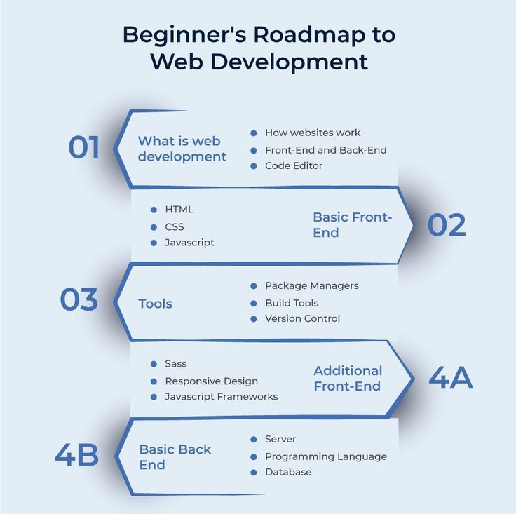

"Du design à l'expérience utilisateur, l'intégrateur web est le maillon essentiel qui donne vie à vos projets web."
"Nous codons, créons et convainquons : l'intégration web, c'est transformer vos designs en expériences digitales inoubliables."
Concis et efficace
L'intégrateur web est l'artisan du numérique. Il transforme les maquettes graphiques en sites web fonctionnels et esthétiques.
Doté d'une solide maîtrise des langages HTML, CSS et JavaScript, il assure une intégration impeccable, optimisée pour tous les supports.
Rigoureux et créatif, il garantit une expérience utilisateur fluide et agréable.
Plus détaillé
Vous avez imaginé le design parfait pour votre site web ?
L'intégrateur web donne vie à votre vision en convertissant les maquettes graphiques en code propre et optimisé. Son rôle est essentiel dans la création d'une interface utilisateur intuitive et performante. Grâce à ses connaissances en développement front-end,
il met en œuvre des solutions techniques innovantes pour répondre aux besoins spécifiques de votre projet.
Axé sur les compétences
L'intégrateur web est un expert en développement web front-end.
Il possède une maîtrise parfaite des langages HTML, CSS et JavaScript, ainsi qu'une excellente connaissance des frameworks et bibliothèques populaires (React, Angular, Vue.js). Soucieux du détail, il accorde une grande importance à l'accessibilité et à la performance de ses réalisations. Il est également capable de travailler en équipe et de s'adapter aux dernières tendances technologiques.

Les fondamentaux
Les compétences clés d'un intégrateur web :
Maîtrise des langages web : HTML, CSS, JavaScript
Connaissance des frameworks et bibliothèques : React, Angular, Vue.js, jQuery
Outils de développement : Éditeurs de code, outils de versioning (Git), navigateurs de développement
Responsive design : Adaptation des sites web à tous les supports (ordinateur, tablette, mobile)
Optimisation pour les moteurs de recherche (SEO) : Amélioration du référencement naturel
Accessibilité : Conception de sites web accessibles à tous
Performance : Optimisation de la vitesse de chargement des pages
Les qualités d'un bon intégrateur web :
Rigueur : Respect des normes et des bonnes pratiques
Créativité : Recherche de solutions innovantes
Sens du détail : Soin apporté à la qualité du rendu
Curiosité : Envie d'apprendre et de se tenir informé des dernières tendances
Capacité d'adaptation : Flexibilité face aux évolutions technologiques
Pour résumer, l'intégrateur web est un maillon essentiel dans la chaîne de création d'un site web.
Ses compétences techniques et ses qualités personnelles lui permettent de transformer une idée en réalité numérique, en offrant une expérience utilisateur optimale.
Vous souhaitez approfondir un aspect particulier de ce métier ? N'hésitez pas à me poser d'autres questions.